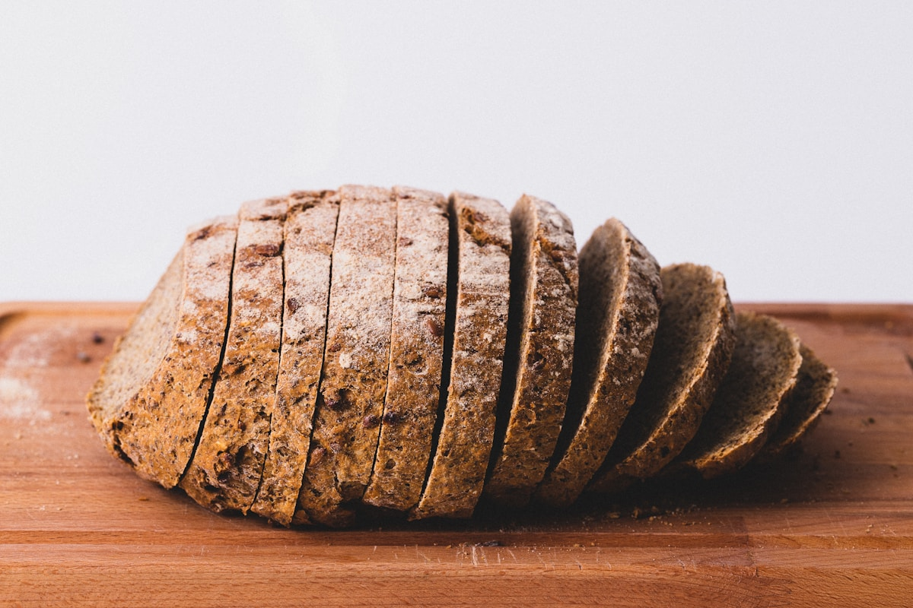

Helping bread & flour producers build better products, faster.
KIDEX is an innovation and consulting company working alongside bakeries and flour producers — refining what's already on the line, and developing what comes next.
An innovation & consulting partner for the bakery and flour industry.
KIDEX works with bread and flour producers on two fronts: sharpening what they already make, and building what they'll make next.
On the optimization side, that means fine-tuning ingredients, processes and recipes so the final product performs better on every measure that matters — quality, taste and nutritional value.
On the development side, it means creating and launching new products that answer where the market and the consumer are actually heading, rather than where they've already been.
Innovation
Consulting
Solutions
Close to the product. Connected to what comes next.
From the ingredient and the production line to the digital tools around the business, KIDEX keeps practical results at the center.


Two disciplines. One goal — a better shelf.
Bread & Flour Product Optimization
Refine what's already workingFine-tuning ingredients, processes and recipes to lift the quality, taste and nutritional value of the finished baked goods — without losing what already works on the line.
New Product Development
Build what's nextCreating and launching new products designed around real market demand and consumer needs — from early concept through to a formulation ready for production.
Innovation, consulting and solutions — treated as one continuous process, not three departments.
Every engagement moves from understanding a product's current performance, through hands-on advisory, to a concrete recipe, process or launch plan a producer can put on the line.
Innovation
Looking at ingredients, processes and formats with fresh eyes, grounded in how the products actually get made.
Consulting
Working directly alongside a producer's team rather than handing over a report and stepping away.
Solutions
Ending with something usable — a refined recipe, a new formulation, a clearer process.
KIDEX works close to the ingredient — the grain, the flour, the dough — because that's where quality and taste are actually decided.